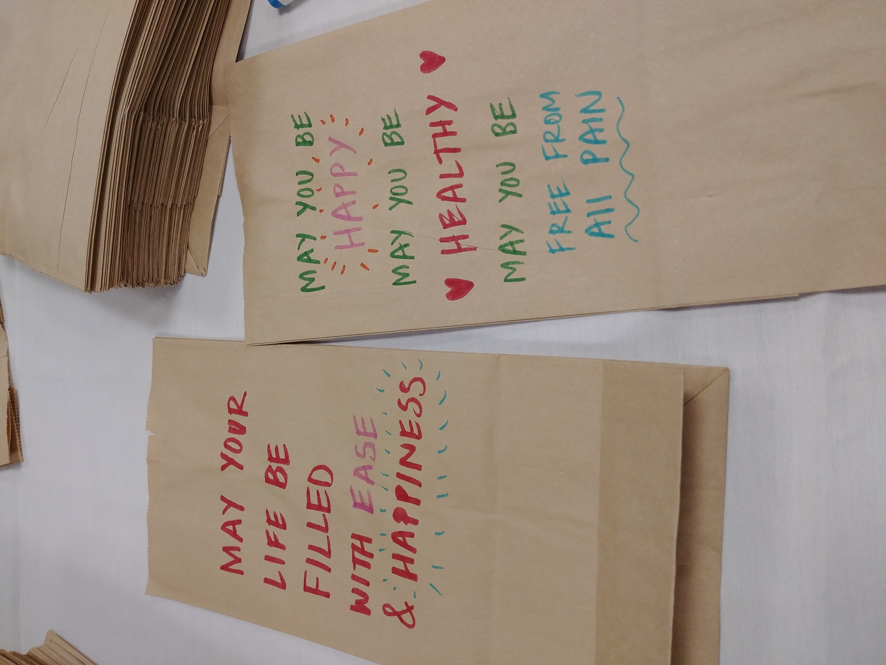
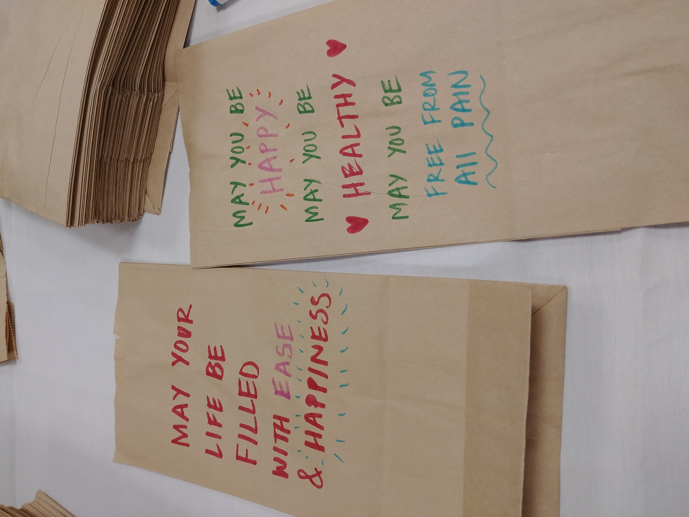

Problem There are many people who face self judgemental or self critical thoughts on a daily basis. These thoughts often become normalized in our lives and contribute to feelings of depression and isolation. Solution Cometta(Co meaning together, Metta meaning loving kindness) is an app that will help you be mindful of your self critical thoughts and respond to them with kindness through a series of exercises. You can share this kindness by sending and receiving kind messages all over the world.
Process
Cometta was my senior thesis project at Emily Carr university of Art and
Design. As the sole designer for this project I was responsible for a
wide range of the design process from product concept ideation to, user experience
and UI/visual design.
The project began as an exploration into the question:
How might we design something that focuses on a transformative aspect
of mindfulness?
Concept Ideation A big part of this project early on was ideation through sketching and early prototyping. Video prototyping helped me to quickly get feedback on whether my ideas made sense and resonated with people. I didn't really have to explain to them my concept with words. Through the video, the user could immediately see what is clear and not clear to them.
Research
My ideation led me to think about self compassion so I began to research the
science and writings about the topic.
What I learned was that people who have self critical thoughts have been shown
to have an increased risk of depression, and other mental illnesses. Forms
of self-criticism include dwelling on mistakes, a sense of inadequacy, and
feelings of self-hate and disgust.
What might self critical thoughts look like in a user?
"Im too unlikable to lead the engineering team"
"I'm not a good enough father for my kids"
"Bob is so much more social than me"
Volunteering and charity work was an immediate association for the term compassion.
So, as a form of field study research, I went volunteering to help make and
distribute sandwiches for the homeless.
I spoke to a volunteer about her experience volunteering. She mentioned how
she was a bit unhappy with her career and the sort of rat race associated with it.
Seeing other people do things selflessly and without getting paid was what
inspired her to volunteer more herself and give her time to people in need.
Inspiration is a word that I feel captured the experience of volunteering well:
“I become so inspired … they are not getting paid to do it ...give my time to people in need”
 

At another volunteering event, the volunteers were given markers to decorate the paper bags with encouraging words for people in need who will receive sandwiches in those bags.
I used the phrases spoken during loving kindness meditation or metta meditation which I was introduced to at a guided mindfulness meditation class.
My conversation with the volunteer about her job and experience volunteering led me to think about a target user of working adults. Based on this insight and my other research and sketching(personas, empathy maps, and user journeys) a more refined problem was discovered:
Work life can be very unfulfilling and the competitive and fast paced nature of modern jobs can lead to self critical and judgmental thoughts. The first step to compassion is self compassion. Help users (working adults) cultivate self compassion.
User Goals: notice, examine, and reframe self critical thoughts
Design Goals: create a simple, cohesive experience that can be used by working adults
Competitive Analysis
Throughout this process of sketching and refining ideas, I looked at existing products in the market space for reference and analysis. The topic of self compassion is not a focus of these apps. The goal of my design was to bring the conversation of self compassion to the forefront of the mindfulness space.
Apps like headspace, insight timer, and calm specialize in having a variety of guided audio meditations.
Key Strengths: Variety, Simple and effective branding, plenty of educational content(audio, video, writing)
Key weakness: Too many options. Journeys can feel isolating, sedentary and uninspiring. App could turn into a place of escape rather than ongoing mindfulness
One particularly interesting product was kind words (lo-fi chill beats to write to). This indie game about writing and responding to kind letters has a similar concept to Cometta.
Key Strengths:Strong visual design, and storytelling, Existing gamer market/ community, and Overwhelmingly positive reviews.
Key weakness:Possible to give bad advice since there is a lack of tools and techniques for players to use. Players might tend to dwell on problems rather than find ways to solve them.
At this point a key user flow had been mapped out which reflects the 3 elements of self compassion: Mindfulness. Self - Kindness, and Common humanity.
Prototyping
Low fidelity prototype v1
The goal of my first (formal) prototype was to map out this experience physically and test it out. I created a pdf of instructions guiding the user through a 1 minute audio mindfulness meditation, and a self kindness exercise. For the last step, users wrote out a kind message for the other participants on a poster titled the kind message network.
Key insights v1
- messages like “you are loved” resonated with users during testing.
- doing this process in the midst of work, even if it's fast, is still an interruption.
- have the option to write down the thought as thoughts can be messy in your head
- the process feels boring; simply following instructions.
Low fidelity digital prototype v2
For the next iteration, I moved to create low fidelity digital prototypes in figma. In order to make the process feel less boring and more engaging, I had come up with an idea of using clickable comets orbiting in space as the interface for viewing messages from other people, from the name Cometta. I tested the overall flow/ and layout of the app.
Key insights v2
- The app needed more clear explanations/ education/ onboarding on what each individual step meant. (ex. What is a self critical thought?)
- At this fidelity, the user did not know what the visualization was or whether it was clickable. (make it look more like comets and add affordances for interaction)
- Address specific feedback on wording and placement of app navigation.
User Research Revisit
Before continuing with prototyping, I wanted to go back and revisit my user research. Although I had done a user journey, the level of specificity/zoom was very low. I needed to get more specific,non- assumption, and accurate details that could inform the value proposition and design of the product. I wouldn’t be able to get those specifics with my existing user research (field studies, conversation, and observation).
Therefore I had done some user interviews. I asked 3 adults about their average working day and looked more specifically at the pain-points in their work life.
Here are some common insights I got from these interviews:
- People are really motivated to succeed and success in their job brings them happiness.
- Many of them have pretty busy and full schedules.
- Common pains include dealing with difficult people and having tight deadlines or interruptions in their schedules.
- Communicating with loved ones is something they already do during their work breaks.
At this point I was able to refine and digitize my existing persona to reflect my new insights. From there, a more focused user scenario, and value proposition was made as well.
Prototyping Continued
Digital prototype v3
For the next prototype iteration I included higher fidelity visuals based on initial visual identity sketches I had done. The purpose of this was to test out my ideas relating to visual elements and how it might help to communicate the experience and interactions. In the double diamond process this stage represents the first convergence
Low fidelity wireframe prototype v3.5
I went to a much lower fidelity for the next prototype. This was done in order to quickly design and test the content hierarchy and screen interactions since I had completed the written content of the app. In a double diamond process this stage represents the second divergence of the second diamond.
Visual Identity Development
Driving the visual identity is this idea of the overview effect. (link) Just as astronauts gain a new perspective and feeling of oneness with the world, the visual design of cometta seeks to emulate that feeling through a narrative element of space exploration as a metaphor for the exploration of the patterns of the mind. I began my exploration into the visual identity with a collage.
I applied the visual style of the collage to the next prototype (v3). Based on the feedback I received from testing prototype v3, I proceeded to continue work on the visual identity. I worked in key-note and illustrator in order to easily animate and play around with colors, shapes, and layouts of UI elements.

collage visual exploration
Prototyping Continued
High fidelity prototype v4
I created a high fidelity prototype adding all the content, and visual design assets that I designed.
Final Prototype v5
Takeways + Next Steps
The final design outcome was determined heavily through the iterative process of prototyping, testing, and refinement. The approach to solving the high level problems continued to evolve as new insights from testing and user research came up. Ultimately the core experience of cultivating self compassion is amplified by strong visual design choices. A continuous challenge in the process was maintaining a balance between depth and simplicity of the experience in order to bring in more engagement and interest from users. Placing focus on the kind message sharing feature differentiates Cometta from existing mindfulness apps that might touch upon self compassion as a part rather than the whole of their offering.
A meaningful next step would be to conduct a thorough test of how effective the app is at giving users the ability to shift their self critical thoughts towards more self compassionate ones. This would require a serious time commitment from testers as well as an ethical, and formal testing process. As the sole designer on this project, my ability does not go far beyond design. So, bringing in people from many different fields to contribute their expertise to this product, will be a valuable step in making this product more inclusive and valuable for users.